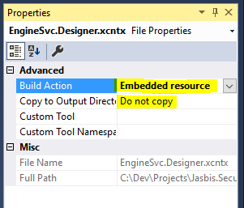

The namespace Inetdev.Context provides what we called the
Application Context which is an object factory that implements the Inversion
Of Control (IoC) pattern.
This factory is based on the Spring Framework for Java and implements a property based IoC container.
The object factories are configured through XML files with two specific
extensions: *.xcntx files allows the configuration of objects
that the application context will provide and *.xpckg files, that
allows the configuration of packages to be scanned for context files (*.xcntx).
Factory configurations files must conform and are validated against XSD schemas.
A configured object looks like this:
<!-- Object: GroupMappings -->
<object name="GroupMappings" singleton="true"
type="Inetdev.Data.ColumnPropertyMappings, Inetdev.Data, Version=1.0.0.0, Culture=Neutral, PublicKeyToken=856a2402e38a9992">
<property name="Item">
<map>
<entry key="ID" value="Id"/>
<entry key="PARTITION_KEY" value="PartitionKey"/>
<entry key="NAME" value="Name"/>
<entry key="TYPE" value="Type"/>
<entry key="AUTHORITY" value="Authority"/>
</map>
</property>
</object>
You can configure the application context using external configuration files that will be stored in a directory accesible for the application. This directory is configured in the application settings files as documented in configuration.
This directory will contains *.xpckg files and *.xcntx files.
The application context is built by reading the packages files, then the specified assemblies are scanned for *.xcntx files to build the object factories. After the package files are processed, the *.xcntx files are read and the objects are added to the application context.
*.xcntx files can be embedded within class libraries and will be loaded by the application context. For this to happen the files properties must be set correctly as shown in the following image.

Packages can be configured internally to tell the application context
which assemplies must be scanned to build the context. Packaged files
(*.xpckg) are not read from libraries, instead you must
implements a class or classes thet inherits from
Inetdev.Context.ApplicationContextRegistration as in the
following example:
namespace Security.SecOps
{
using Inetdev.Context;
public class ContextRegistration : ApplicationContextRegistration
{
public override void Register(ApplicationContext context)
{
context.RegisterPackage(new Package("Security.Env, Version=1.0.0.0"));
context.RegisterPackage(new Package("Security.Core, Version=1.0.0.0"));
}
}
}
The application context will scan assemblies for this classes and build the object factories from the specified assemblies.